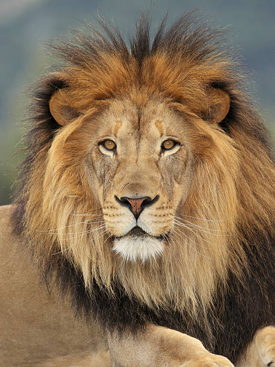

We start by defining the finite difference operators for the x and y directions respectively.
We then convolve the original image by the Dx operator and the Dy operator, creating two new
images that detect the horizontal and vertical edges respectively. To calculate the gradient
magnitude, I stacked the x and y partial derivative images and took the L2 norm to find the
final pixel values.
Gaussian Blurred Cameraman ImageDerivative of Gaussian Filter
I noticed some key differences from the DoG filter versus the finite difference operator. The edge lines seem to be much thicker,
implying that there were a lot more "activations" of the DoG filter. You can clearly see the outline of the man and his camera.
There is also less noise since our threshold did not have to be too low to capture the relevant edges.
I also noticed that doing the entire process in a single convolution by first blurring the finite difference operators with the
Gaussian kernel resulted in the same exact image.
2.1 Image "Sharpening"
Original Blurry Taj Mahal ImageSharpened Taj Mahal ImageOriginal Sharp City Night ImageBlurred City Night ImageResharpened City Night Image
Based on visual observation, the resharpened image seems to be at the same level of "sharpness" as the original.
2.2 Hybrid Images
Derek and Nutmeg Blend
Derek OriginalDerek FFTNutmeg OriginalNutmeg FFTLow Frequency Derek FFTHigh Frequency Nutmeg FFTBlended Derek and Nutmeg ImageBlended Derek and Nutmeg FFT
Woman and Lion Blend
Woman Original Image

Lion Original ImageBlended Woman and Lion
Passage of Time (Blended Clocks)
Clock 1Clock 2Blended Clocks
For these images the blend is a little subtle - you can see that we used a low-pass filter for the first clock (whose
hands are blurred) and a high pass filter for the second clock (outlined hands)
2.3 Gaussian and Laplacian Stacks
Apple LaplacianOrange Laplacian
2.4 Multiresolution Blending
Apple and Orange Blend
Orange/Apple MaskOrappleSee Laplacian stacks in section 2.3
Berlin Wall Man and Woman Painting Blend
Painting of ManPainting of WomanMan/Woman MaskLaplacian of ManLaplacian of WomanFinal Blended images
Earth on Stage Blend
Earth Original ImageStage Original ImageEarth/Stage MaskEarth LaplacianStage LaplacianFinal Blended Earth/Stage